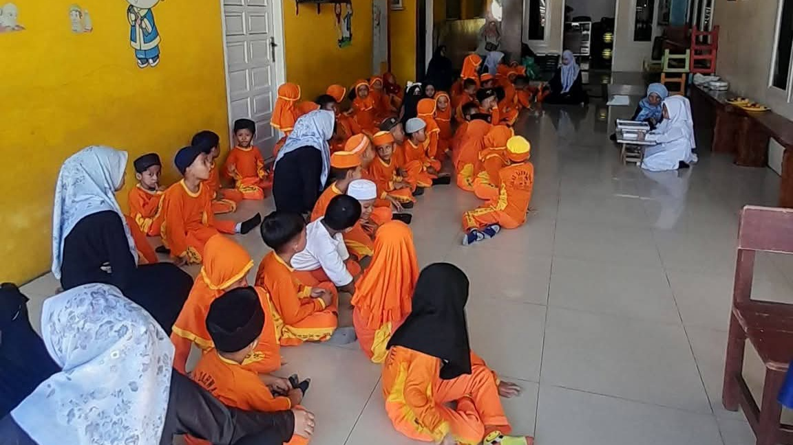
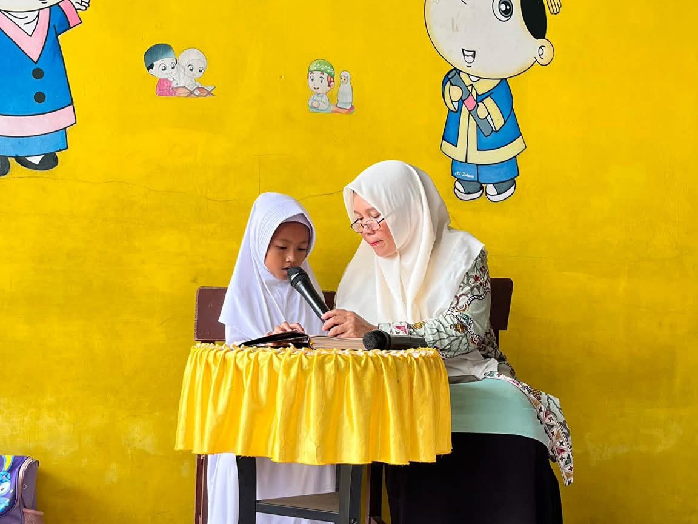
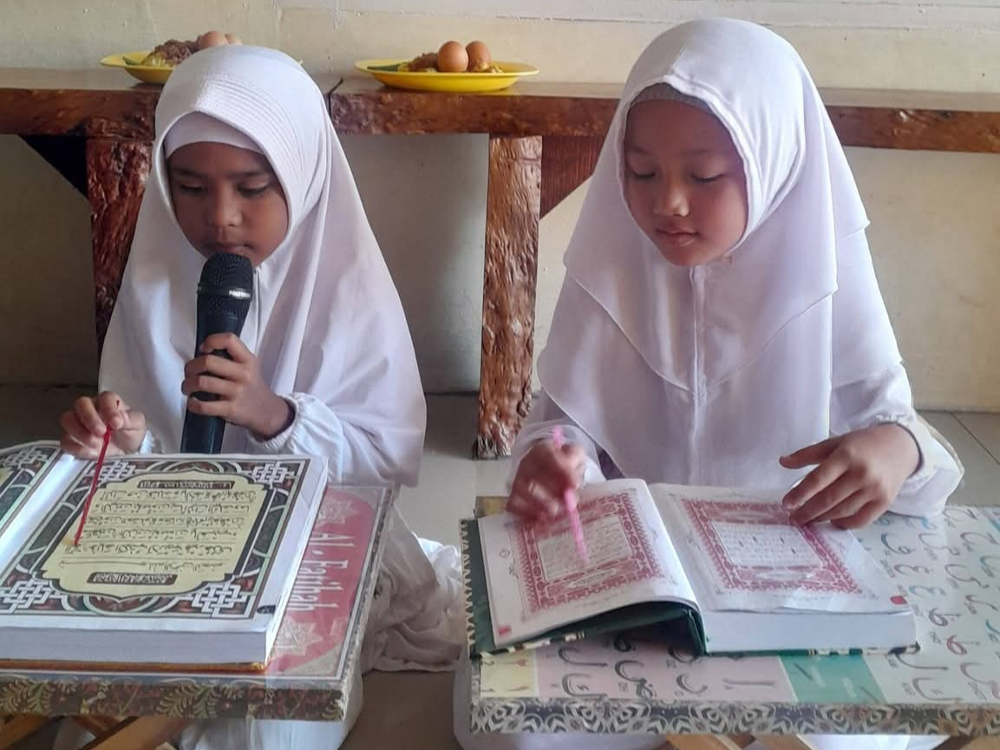
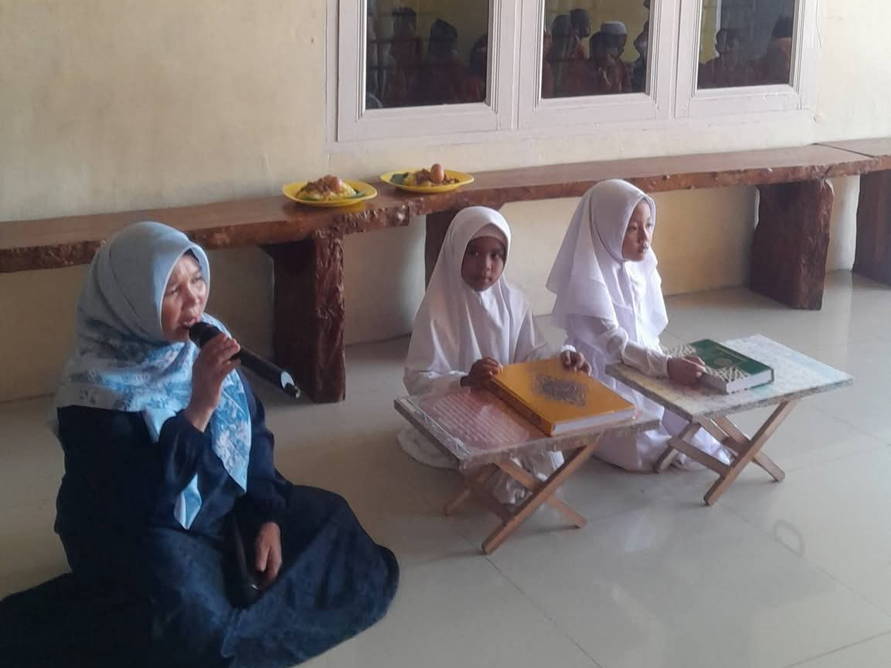
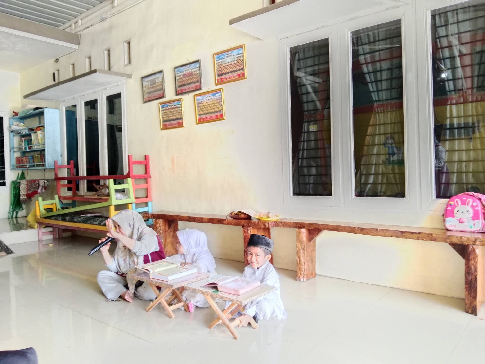

13 s/d 15 Juni 2026
Admin RA AZ ZAHWA BINJAI

BINJAI – Kebahagiaan kembali menyelimuti keluarga besar RA AZ ZAHWA BINJAI. Setelah sukses melaksanakan kegiatan wisuda pada 10 Juni 2026, sekolah kembali mengadakan kegiatan Khatam Iqro' yang dilaksanakan pada tanggal 13 hingga 15 Juni 2026. Kegiatan ini menjadi salah satu momen penting dalam perjalanan pendidikan agama siswa-siswi sebelum memasuki tahap pembelajaran Al-Qur'an.


Kegiatan ini diikuti oleh siswa-siswi yang telah menyelesaikan pembelajaran Iqro' dan siap melanjutkan ke tahap membaca Al-Qur'an. Acara berlangsung dengan penuh semangat dan didampingi langsung oleh para guru serta orang tua murid. Selama kegiatan berlangsung, para peserta menunjukkan kemampuan membaca huruf hijaiyah, tajwid dasar, serta kelancaran membaca Iqro' yang telah dipelajari selama mengikuti pendidikan di RA AZ ZAHWA BINJAI.
Kepala sekolah RA AZ ZAHWA BINJAI menyampaikan rasa syukur dan bangga atas pencapaian para siswa. Kegiatan ini menjadi bukti bahwa pendidikan Islam sejak usia dini mampu menanamkan kecintaan terhadap Al-Qur'an dan membentuk karakter anak yang berakhlak mulia.


Selamat kepada siswa-siswi yang telah menyelesaikan pembelajaran Iqro' dan melanjutkan ke tahap membaca Al-Qur'an. Semoga menjadi generasi Qur'ani yang berakhlak mulia.